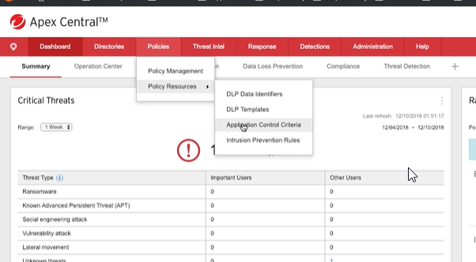

Policy Management
- All policy is configured on Apex Central
Except Apex One Firewall (apex one cancell?)
- Only one policy can be assigne per Endpoint
When has multiple policy targed single endpoint one highest of the list take precedence
- Policy includes all licensed features in one(not separate policy for vulnerabilities protection or application control)(It is like a master policy for the endpoint)

Click on Allow(NOT BLOCK)

Can name the rule


Agora para o Policy Management


Clica em Create

Pode criar suas proprias policy

Vulnerability protection (Performance and Security priority)
Threat Intel (Suspicious menu)
- Suspicious Objects(Black list)
Virtual Analyzer SO's
User Defined SO's (São feitos uploads de um usuario especifico)
STIX (pode fazer upload)
OpenIOC (pode fazer upload)


Custom Intelligence


API é integrado aqui:

Response
Do an investigation using the endpoint sensor of the agent
- Preliminary Investigation
- Server-side Metadata Sweeping first(when do a search the server check the metadata on the server)
- Targeted Root Cause Analysis based on results of search(em vez de ficar analisando todo endpoint)
- Detailed Investigation
- - More depth searches on the endpoint
- - Suppoorts in memory YARA, IOC Disk Seacrhes and Registry


Detections:
- Log Query

- Notification
- Reports